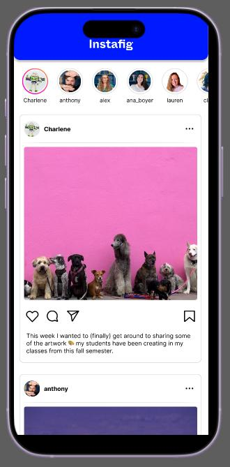

Case Study
Prototyping for Stakeholder Alignment
Turning ambiguous requirements into a clickable prototype, so teams agree on what they're building before a single line of code exists.
The Problem
Words alone don't align a team
Technical discussions alone can lead to misalignment, since stakeholders and developers may interpret the same requirement differently — and that gap usually doesn't surface until code is already being built.
The Build
A clickable prototype before any code
I use Figma to build a visual, interactive prototype before development starts, so stakeholders can click through the real experience and give feedback early — reacting to a working flow instead of a finished feature.

The Result
Alignment before a line of code
Teams align on what they're building before development starts. Feedback happens early, when it's cheap to act on, instead of after a feature ships and needs rework.